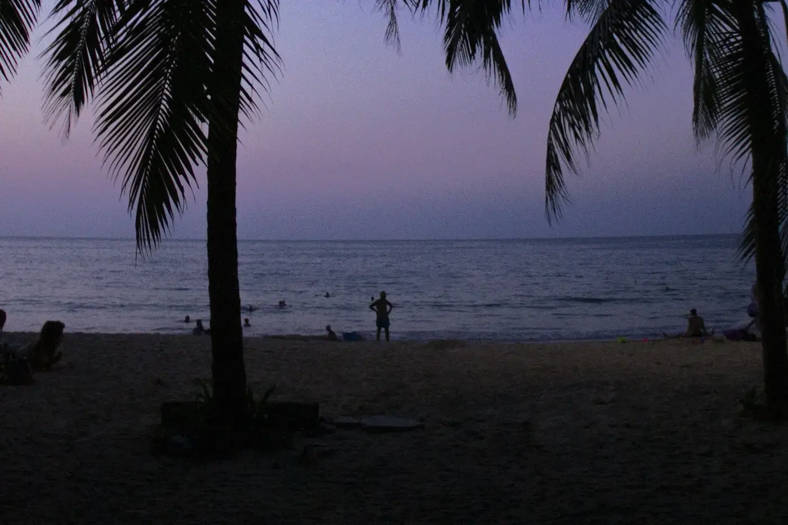
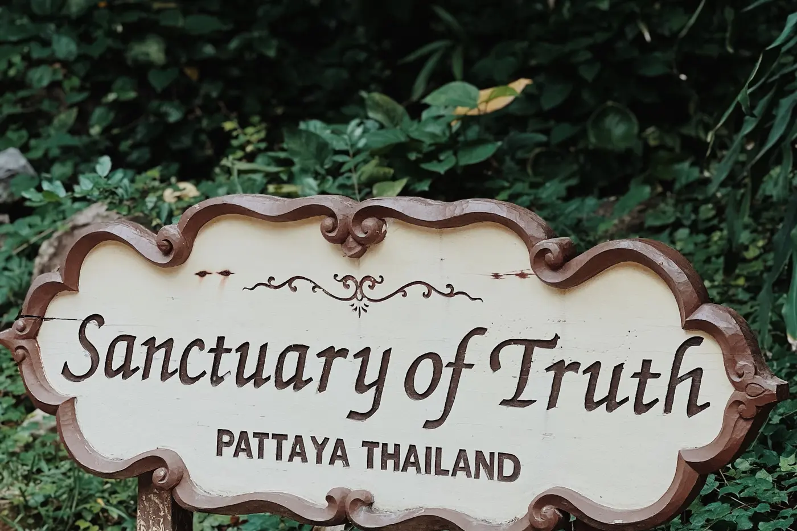

Vodiči / Pataja
Pataja — kad ići, aerodrom, šta obavezno vidi

Ovaj vodič je pisan za goste koji prvi put dolaze u Pataju — grad na istočnoj obali Zaliva Tajlanda, oko dva sata od Bangkoka, poznat po dugoj plaži, burnom noćnom životu i sve razvijenijoj ponudi za porodice i ljubitelje mira malo van centra.
Kad doći u Pataju — najbolje vreme za grad
Novembar do februar je najprijatniji period — niža vlažnost, temperature oko 25-32°C i najmanje kiše, pa je to i vrhunac sezone sa najvišim cenama smeštaja. Mart do maj donosi najveću vrućinu, često i preko 35°C. Jun do oktobar je kišna sezona sa kratkim, ali intenzivnim popodnevnim pljuskovima — more i plaže su i tada uglavnom u funkciji, a hoteli i letovi znatno jeftiniji nego u sezoni.
Aerodrom i put do Pataje
Najbliži je aerodrom U-Tapao (UTP), udaljen oko 30 km — vožnja traje 30-40 minuta, ali broj međunarodnih letova je ograničen. Većina putnika sleće na Suvarnabumi (BKK) u Bangkoku, glavni međunarodni čvor udaljen oko 120 km; taksi ili unapred rezervisan transfer traju 1,5-2 sata, zavisno od saobraćaja. Don Mueang (DMK), aerodrom za low-cost kompanije, leži na suprotnoj strani Bangkoka od Pataje, pa transfer odatle traje duže i obično je skuplji. Autobusi i minibusevi ka Pataji polaze redovno sa oba bangkočka aerodroma i sa autobuskih terminala u gradu, po znatno nižoj ceni od taksija.
Koliko košta izlazak u Pataji — orijentacione cene
- Ulična hrana (pad thai, satay, sveže voće) — 40-80 baht (~1-2€) po porciji.
- Riblji ili morski obrok u restoranu na plaži — 200-400 baht (~5-10€) po osobi.
- Tajlandska masaža (1 sat) — 300-400 baht (~8-11€).
- Brodski izlet do ostrva Koh Larn — 300-600 baht (~8-16€) po osobi, zavisno od tipa čamca i broja stanica.
- Baht-bus (songthaew) po glavnoj ruti — 10-20 baht po osobi, po kraćoj relaciji.
Šta obavezno vidi u Pataji za 3-4 dana
- Pataja Bič — glavna gradska plaža sa šetalištem, dugim nizom hotela i restorana odmah uz obalu.
- Walking Street — pešačka zona sa barovima, klubovima i restoranima, srce noćnog života grada.
- Sanktuarijum istine (Prasat Sut Ja-Tum) — ogromna drvena građevina u tradicionalnom tajlandskom stilu, sa detaljnom ručnom rezbarijom, na obali severno od centra.
- Big Buddha Hill (Wat Phra Yai) — brdo sa zlatnim kipom Bude i panoramskim pogledom na grad i zaliv.
- Ostrvo Koh Larn — poludnevni ili celodnevni brodski izlet do plaža sa bistrijim morem nego u samoj Pataji.

Gde jesti u Pataji — lokalna kuhinja
Ulična hrana je okosnica grada — pad thai, som tam (salata od zelene papaje) i mango sa lepljivim pirinčem nalaze se na skoro svakom uglu, najjeftinije na noćnim pijacama van glavnog šetališta. Kao primorski grad, Pataja se oslanja i na sveže morske plodove — škampe, lignje i ribu na žaru, najbolje u restoranima duž plaže Naklua ili Jomtien, gde su cene niže nego na samom Walking Street-u. Za nešto mirniju večeru uz more, restorani na severnom delu plaže su manje turistički i gušći.
Skrivena mesta u Pataji van glavnih ruta
- Jomtien Bič — mirnija i duža plaža južno od centra, popularna kod porodica i ljubitelja vodenih sportova.
- Bang Saray — malo ribarsko selo južno od Pataje, sa autentičnijom atmosferom i restoranima na doku.
- Khao Chi Chan — reljef Bude urezan u stenu planine, retko na spisku turista iako je lako dostupan.
- Nong Nooch tropska bašta — ogroman botanički park malo van grada, sa organizovanim izletima i manje gužve nego na plaži.
Praktični saveti pre puta
- Dokumenta — pravila ulaska i dužina boravka bez vize zavise od državljanstva; provери važeće uslove za svoju zemlju pre putovanja.
- Valuta — tajlandski baht (THB); kartice se prihvataju u većim hotelima i restoranima, ali je keš potreban za ulične tezge, pijace i baht-buseve.
- Lokalni transport — songthaew (baht-bus) kombiji kruže glavnim rutama za sitan iznos; taksimetri su rečji, uobičajeno je pregovaranje o ceni unapred za tuk-tuk ili moto-taksi.
- Vrućina i sunce — visoka vlažnost tokom cele godine; krema za sunčanje, voda i laka pamučna odeća su obavezni, pogotovo van sezone kad je i najtoplije.
- Poštovanje običaja — u hramovima se traži pokrivena odeća (ramena i kolena) i skidanje obuće pri ulasku.